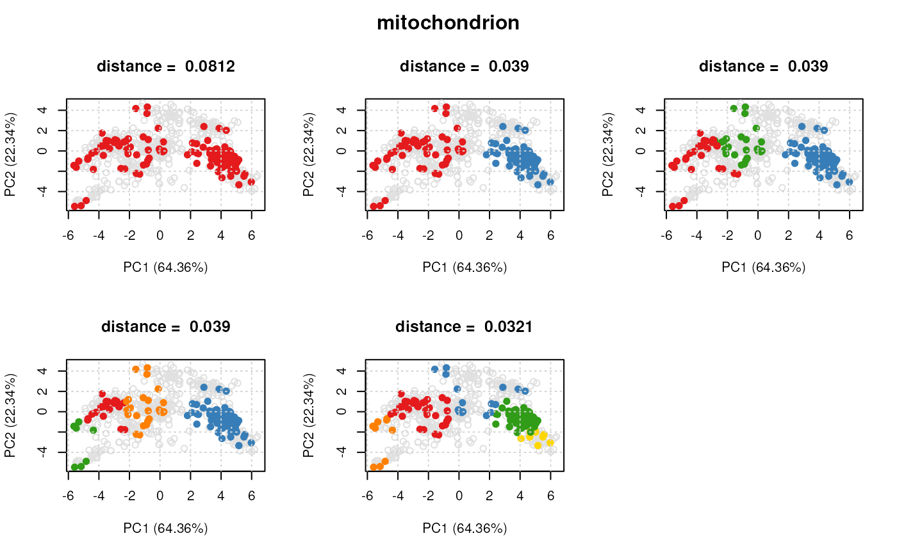
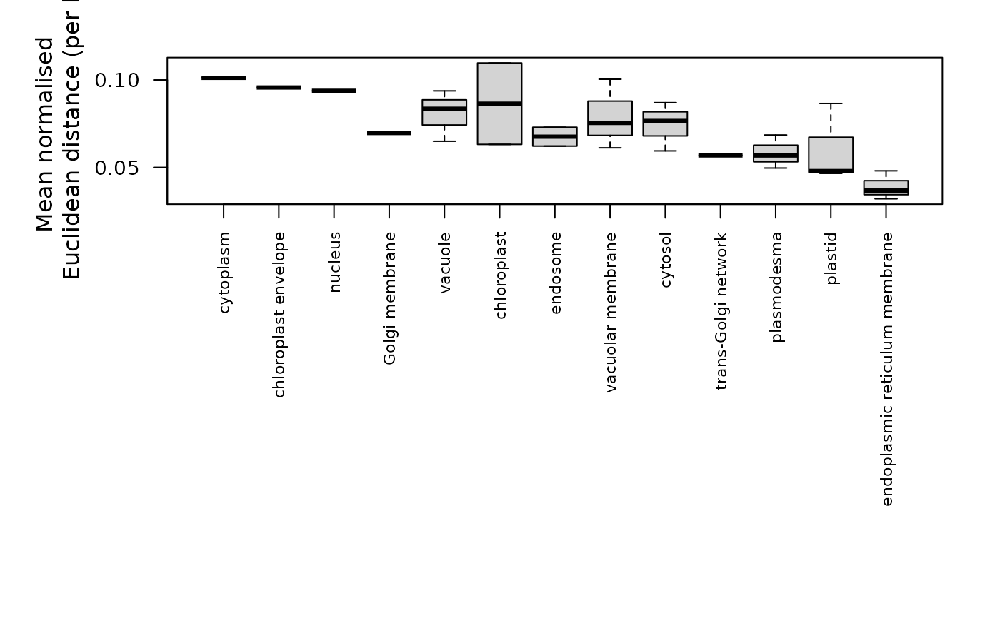

Pairwise Distance Computation for Protein Information Sets
Source:R/clusterdist-functions.R
clustDist.RdThis function computes the mean (normalised) pairwise distances for pre-defined sets of proteins.
Arguments
- object
An instance of class
"MSnSet".- k
The number of clusters to try fitting to the protein set. Default is
k = 1:5.- fcol
The feature meta-data containing matrix of protein sets/ marker definitions. Default is
GOAnnotations.- n
The minimum number of proteins per set. If protein sets contain less than
ninstances they will be ignored. Defualt is 5.- verbose
A logical defining whether a progress bar is displayed.
- seed
An optional seed for the random number generator.
Value
An instance of "ClustDistList" containing
a "ClustDist" instance for every protein set, which
summarises the algorithm information such as the number of k's tested
for the kmeans, and mean and normalised pairwise Euclidean distances
per numer of component clusters tested.
Details
The input to the function is a MSnSet dataset
containing a matrix appended to the feature data slot
identifying the membership of protein instances to
a pre-defined set(s) e.g. a specific Gene Ontology term etc.
For each protein set, the clustDist function (i)
extracts all instances belonging to the set, (ii) using
the kmeans algorithm fits and tests k = c(1:5)
(default) cluster components to each set, (iii) calculates
the mean pairwise distance for each k tested.
Note: currently distances are calcualted in Euclidean space, but other distance metrics will be supported in the future).
The output is a list of ClustDist objects,
one per information cluster. The ClustDist
class summarises the algorithm information such as the number of k's
tested for the kmeans, and mean and normalised pairwise Euclidean
distances per numer of component clusters tested. See ?ClustDist
for more details.
See also
For class definitions see "ClustDistList"
and "ClustDist".
Examples
library(pRolocdata)
data(dunkley2006)
par <- setAnnotationParams(inputs =
c("Arabidopsis thaliana genes",
"Gene stable ID"))
#> Using species Arabidopsis thaliana genes (TAIR10)
#> Warning: Ensembl will soon enforce the use of https.
#> Ensure the 'host' argument includes "https://"
#> Using feature type Gene stable ID(s) [e.g. AT1G01010]
#> Connecting to Biomart...
#> Warning: Ensembl will soon enforce the use of https.
#> Ensure the 'host' argument includes "https://"
## add protein sets/annotation information
xx <- addGoAnnotations(dunkley2006, par)
## filter
xx <- filterMinMarkers(xx, n = 50)
#> Retaining 3 out of 79 in GOAnnotations
xx <- filterMaxMarkers(xx, p = .25)
#> Retaining 2 out of 3 in GOAnnotations
## get distances for protein sets
dd <- clustDist(xx)
#>
|
| | 0%
|
|=================================== | 50%
|
|======================================================================| 100%
## plot clusters for first 'ClustDist' object
## in the 'ClustDistList'
plot(dd[[1]], xx)

## plot distances for all protein sets
plot(dd)

## Extract normalised distances
## Normalise by n^1/3
minDist <- getNormDist(dd, p = 1/3)
## Get new order according to lowest distance
o <- order(minDist)
## Re-order GOAnnotations
fData(xx)$GOAnnotations <- fData(xx)$GOAnnotations[, o]
if (interactive()) {
pRolocVis(xx, fcol = "GOAnnotations")
}